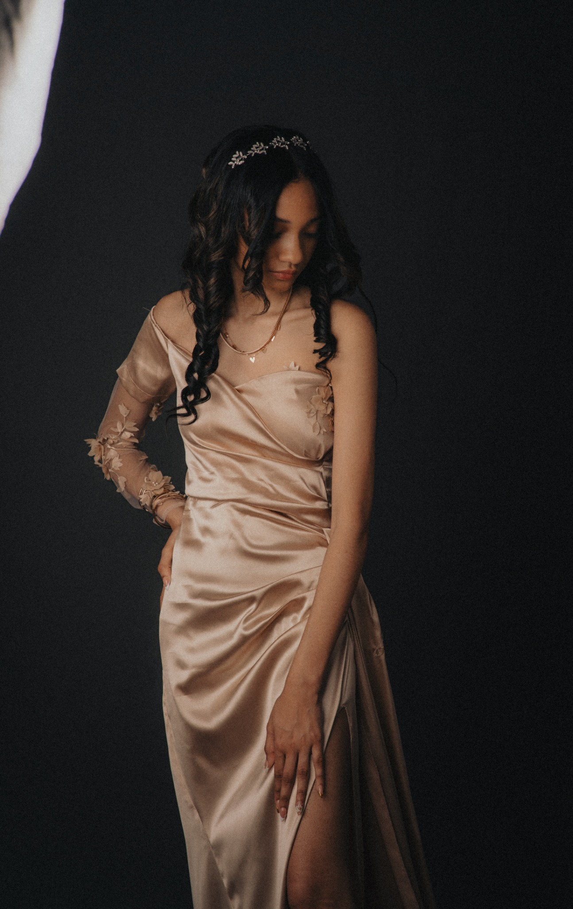
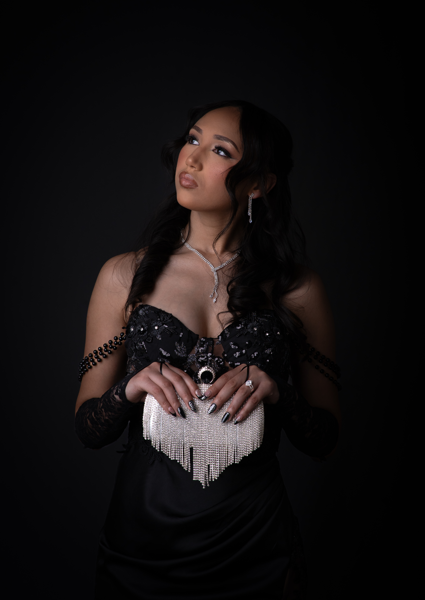

Photographs For Generations

A SIMPLE BELIEF
Not just a photograph.
A piece of your life, kept.
I believe photographs become more valuable with time. My approach is considered and personal: good light, honest connection, and images that still mean something years from now.
EXPLORE MY WORK
Photography, by category


THE STUDIO SIGNATURE
Perennial
Portraits.
Classic, simple and personal. Studio portraits made with intention, giving people room to settle in and look like themselves.
For individuals, couples and families — photographs made to be lived with, printed, framed and passed down.
Ask about a portrait session ↗FAMILY PHOTOGRAPHY
For the people
you call home.
Family photographs don’t need everyone perfectly posed. They should feel like you: the closeness, the chaos, the small gestures, and the people who make your life what it is.
My aim is to create photographs that feel like your family, not a collection of perfect poses. The little connections and in-between moments deserve to be remembered, too.
Plan a family session ↗BEHIND THE CAMERA
The Photographer
Behind The Photographs
I’m Randall Adams, the photographer behind Randall Adams Photography and Perennial Portraits.
My approach is simple: to create photographs that go beyond the moment. I’m drawn to genuine connection, quiet expressions, the character in a face and the stories people carry.
Whether I’m photographing a family outdoors or creating a considered studio portrait, I want every image to feel personal, honest and worth keeping.
Explore my work ↗
LET’S MAKE SOMETHING LAST
Your story
belongs in a photograph.
Portraits · Families · Personal milestones
Start an enquiry ↗Enquiries are welcome by email. I’ll be in touch as soon as possible.